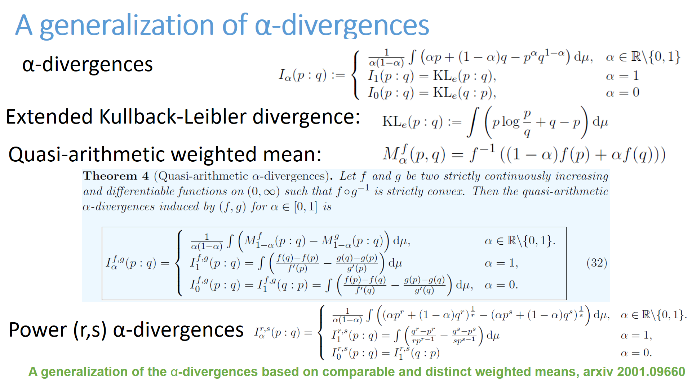

List of cards
Click on a card and then browse the previous card or the following card from the current card.
There are at most 25 cards per page
The card order is random (at HTML compile time). (425)
(425) (426)
(426) (427)
(427) (428)
(428) (429)
(429)- (430)
 (431)
(431) (432)
(432) (433)
(433) (434)
(434) (435)
(435)
Previous card page Next card page